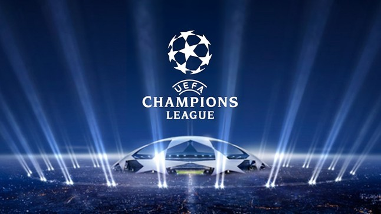

Quais são os principais times europeus e quais são as principais competições?
Futebol na Europa
O futebol é um dos esportes mais populares do mundo, e a Europa é o berço de muitos dos melhores times e competições.
Os principais times europeus incluem clubes renomados como Real Madrid, Manchester City, Barcelona, Arsenal, PSG, Chelsea, Bayern München, Juventus e Liverpool.
Esses clubes têm uma rica história de sucesso em competições nacionais e internacionais.
Melhores times europeus
- -Real Madrid (ESP);
- -Manchester City (ING);
- -Ajax (HOL);
- -Manchester United (ING);
- -Barcelona (ESP);
- -Arsenal (ING);
- -PSG (FRA);
- -Chelsea (ING);
- -Bayern München (ALE).
- -Juventus (ITA).
- -Liverpool (ING).
- -Inter de Milão (ITA).

Principais competições
- -Champions League;
- -Mundial de clubes;
- -La Liga;
- -Premier League;
- -Ligue 1.
- -Bundesliga.
- -Copa do Rei.
- -FA Cup.
- -Coppa Italia.
